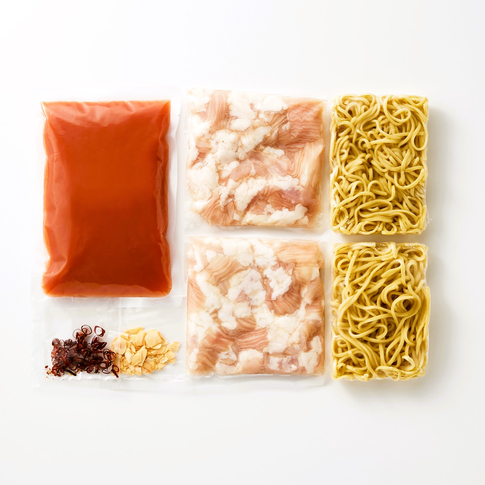
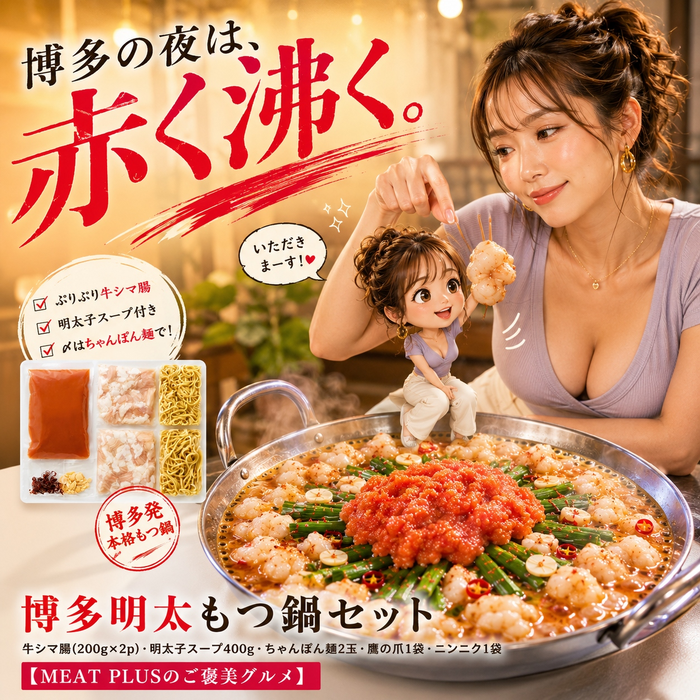

SCENE 01
I025

i 惣菜・加工品
博多明太もつ鍋セット
【ぷりぷり牛もつに絡む、濃厚ピリ辛明太スープがたまらない。】
- 内容量牛シマ腸(200g×2ｐ)・明太子スープ400g・ちゃんぽん麺2玉・鷹の爪1袋・ニンニク1袋
- 保存冷凍
- 産地日本・アメリカ
商品の特徴を読む
今夜はいつもより少し特別な食卓を囲んでみませんか。博多の活気が目に浮かぶような、本格「明太もつ鍋セット」をお届けします。主役は、丁寧に下処理されたぷりぷりの牛シマ腸。噛むほどにじゅわっと広がる上質な脂の甘みと旨みがたまりません。その美味しさを引き立てるのが、北海道産などのたらこを贅沢に使い、魚介の旨みを凝縮した特製明太スープ。ピリッとした辛さの中に奥深いコクがあり、一度食べたら忘れられない味わいです。お好みの野菜を加えるだけで、専門店の味が手軽に完成。鍋の〆には、旨みが溶け出したスープをたっぷり吸った特製ちゃんぽん麺をご用意しました。ご家族や大切な人との団らんに、心も体も温まる絶品鍋をぜひご賞味ください。
公式サイトへ移動します。価格・在庫・配送条件は移動先で最終確認してください。

SCENE 02
噛むほどにじゅわっと広がる上質な脂の甘みと旨みがたまりません。
SCENE 03
鍋の〆には、旨みが溶け出したスープをたっぷり吸った特製ちゃんぽん麺をご用意しました。
PRODUCT INFORMATION
購入前に確認したい商品情報
- 商品名
- 博多明太もつ鍋セット
- 商品規格
- 牛シマ腸(200g×2ｐ)・明太子スープ400g・ちゃんぽん麺2玉・鷹の爪1袋・ニンニク1袋
- 保存方法
- 冷凍
- 原産国
- 日本・アメリカ
- 製造地
- 日本
- 賞味期限
- 発送日より3ヶ月
原材料
牛シマチョウ(アメリカ産）、スープ（米発酵調味料、たらこ（すけとうだらの卵巣（北海道産、アメリカ産、ロシア産）、食塩））、昆布エキス、魚醤、醤油、砂糖、魚介エキス、食塩、かつお、調味エキス、 ホタテエキスパウダー、香辛料、調味料（アミノ酸等）、着色料（紅麹）、ちゃんぽん麺（小麦粉、加工澱粉、かんすい、クチナシ色素、水）、鷹の爪、にんにく （原材料の一部に牛肉・魚醤（魚介類）・小麦・大豆を含む）
FAQ
購入前のよくあるご質問
何人前ですか？
2～3人前を目安としております。キャベツやニラなど、お好みの野菜をたっぷり加えることで、ボリュームを調整してお楽しみいただけます。
保存方法と解凍方法を教えてください。
商品は冷凍庫（-18℃以下）で保存してください。お召し上がりになる前日にもつとスープを冷蔵庫に移し、ゆっくりと解凍していただくと、より美味しくお召し上がりいただけます。
MEAT PLUS OFFICIAL SHOP
【ぷりぷり牛もつに絡む、濃厚ピリ辛明太スープがたまらない。】
仕入れ・加工・梱包・発送まで自社で行うMEAT PLUSの公式オンラインショップでご注文いただけます。
公式オンラインショップで購入する